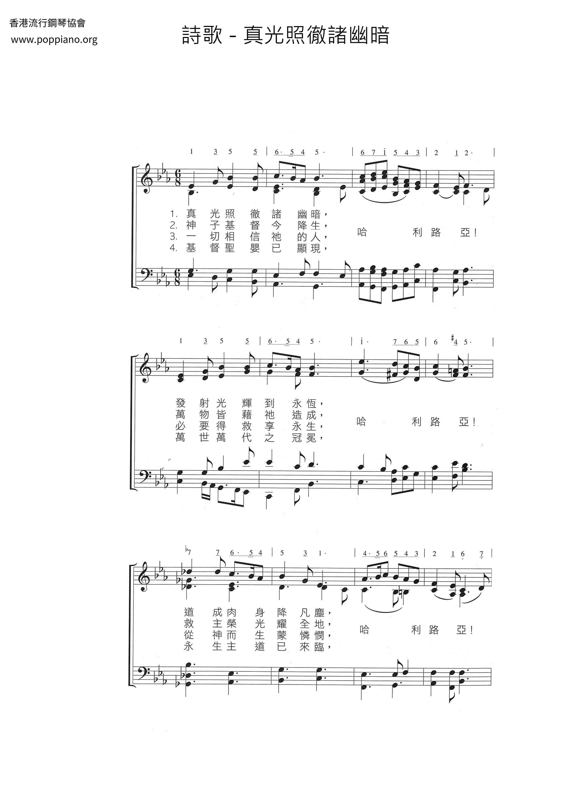
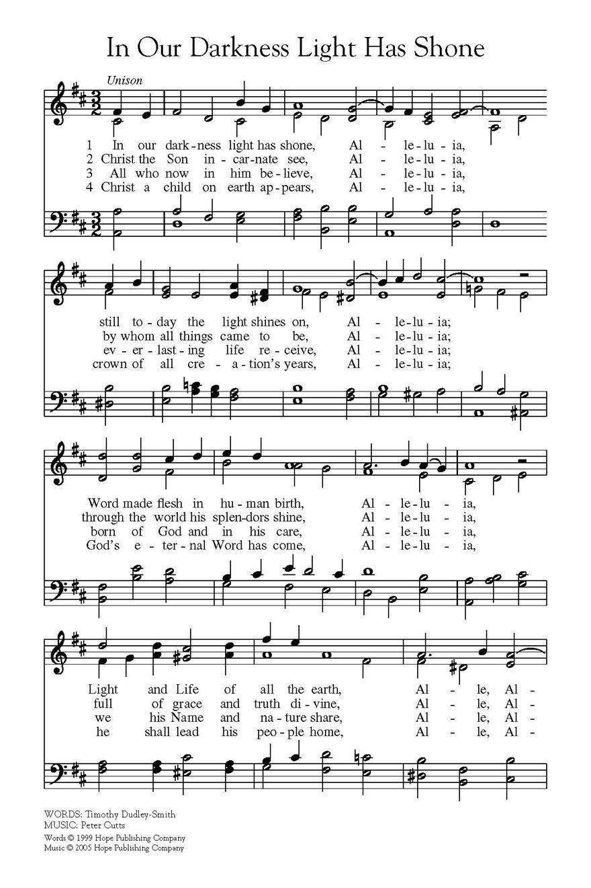
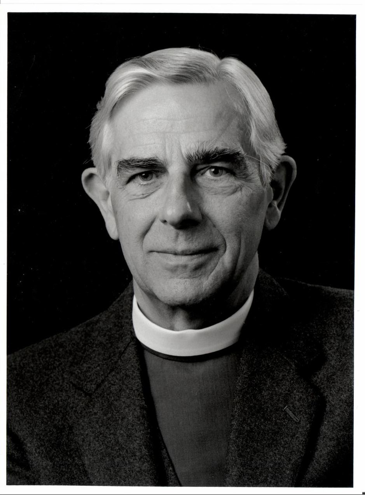

|
|
|
|
1 In our darkness light has shone, 2 Christ the Son incarnate see, 3 All who now in him believe, 4 Christ a child on earth appears, |
|
|
https://www.poppiano.org/cn/sheet/?id=21201
 https://www.hopepublishing.com/find-hymns-hw/hw2104.aspx
 |
|
|
|
|

香港聖詩會 真光照徹諸幽暗 In Our Darkness Light Has Shone https://youtu.be/Jexx3NG-KvUhttps://youtu.be/Jexx3NG-KvU -
| Text: | In our darkness light has shone |
| Author: | Timothy Dudley-Smith (b. 1926) |
| Tune: | UPTON CHEYNEY |
| Composer: | John Barnard (b. 1948) |
| Short Name: | Timothy Dudley-Smith |
| Full Name: | Dudley-Smith, Timothy, 1926- |
| Birth Year: | 1926 |
Timothy Dudley-Smith (b. 1926)

Educated at Pembroke College and Ridley Hall, Cambridge, Dudley-Smith has served the Church of England since his ordination in 1950. He has occupied a number of church positions, including parish priest in the diocese of Southwark (1953-1962), archdeacon of Norwich (1973-1981), and bishop of Thetford, Norfolk, from 1981 until his retirement in 1992. He also edited a Christian magazine, Crusade, which was founded after Billy Graham's 1955 London crusade. Dudley-Smith began writing comic verse while a student at Cambridge; he did not begin to write hymns until the 1960s. Many of his several hundred hymn texts have been collected in Lift Every Heart: Collected Hymns 1961-1983 (1984), Songs of Deliverance: Thirty-six New Hymns (1988), and A Voice of Singing (1993). The writer of Christian Literature and the Church (1963), Someone Who Beckons (1978), and Praying with the English Hymn Writers (1989), Dudley-Smith has also served on various editorial committees, including the committee that published Psalm Praise (1973).
Timothy Dudley-Smith 1926- Wikipedia
|
Timothy Dudley-Smith
|
|
|---|---|
| Bishop of Thetford | |
| Diocese | Norwich |
| In office | 1981–1992 |
| Predecessor | Hugh Blackburne |
| Successor | Hugo de Waal |
| Other post(s) |
Honorary assistant bishop in Salisbury (1992–present) Archdeacon of Norwich (1973–1981) |
| Orders | |
| Ordination | 1950 (deacon); 1951 (priest) |
| Consecration | 1981 |
| Personal details | |
| Born |
26 December 1926
Manchester, UK
|
| Nationality | British |
| Denomination | Anglican |
| Parents | Arthur and Phyllis Dudley-Smith |
| Spouse |
Arlette MacDonald
(m. 1959;
died 2007) |
| Children | 3 |
| Profession | Bishop, hymnist |
| Alma mater | Pembroke College, Cambridge |
Timothy Dudley-Smith OBE (born 26 December 1926) is a retired bishop of the Church of England and a noted English hymnwriter. He has written around 400 hymns, including "Tell Out, my Soul".
Life, education and ministry[edit]
Dudley-Smith was born on 26 December 1926 in Manchester, England, to Phyllis and Arthur Dudley-Smith. His father was a schoolteacher.[1] He was educated at Tonbridge School before studying maths and then theology at Pembroke College, Cambridge.[1] After graduating in 1947, he began his ordination training at Ridley Hall, Cambridge.[2] He was ordained deacon in 1950 and priest in 1951 by Christopher Chavasse, the Bishop of Rochester.[1]
After ordination, Dudley-Smith served as an honorary chaplain to Chavasse, as well as head of the Cambridge University Mission in Bermondsey, South London.[1] In 1955, he was appointed editorial secretary of the Evangelical Alliance and editor of the new Crusade magazine, created after Billy Graham's 1954 London mission.[2][1] Dudley-Smith also began serving with the Church Pastoral Aid Society, serving as assistant secretary from 1959, then as secretary until 1973.[1] He served as Archdeacon of Norwich from 1973 to 1981 and as Bishop of Thetford from 1981 to 1991.[1] He also served as president of the Evangelical Alliance from 1987 to 1992.[3] He was chairman of the governors of Monkton Combe School from 1992 to 1997.[4]
He married Arlette MacDonald in 1959. They were married for 48 years until her death in 2007; they had one son and two daughters.[1] His son, James, is also ordained in the Church of England, and currently serves as rector of St John's Church, Yeovil.[5]
Dudley-Smith has been part of what has been described as a British "hymn explosion" since World War II.[6]
Honours[edit]
Dudley-Smith is a member and honorary vice-president of the Hymn Society of Great Britain and Ireland; he has also been awarded fellowships from the Hymn Society in the United States and Canada and the Royal School of Church Music.[7] In 2003, he was appointed an Officer of the Order of the British Empire "for services to hymnody".[7] In July 2009 he was awarded an honorary Doctor of Divinity degree by Durham University.[8]
https://en.wikipedia.org/wiki/Timothy_Dudley-Smith